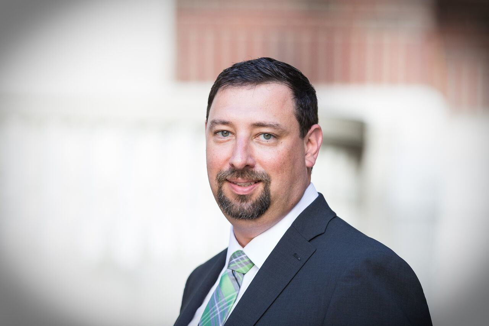
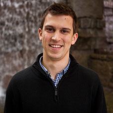

Meet The Team

Jonathan Daniel
Jonathan Daniel is a recent transplant to Seattle from Alabama. He’s worked as a software Business Analyst for the past 10 years. His passion is bringing meaningful impact to people’s lives through useful and elegantly designed software. Also a published author, he spends his days working on web projects, the next novel, and chatting with the voices in his head.
JR Iriarte
Frank (JR) Iriarte is a career student/bar manager turned JavaScript developer looking to hone his chops on professional projects, and (hopefully) bring some humor along the way. He's always working towards perfecting his craft, whether it's a personal pursuit, or professional.
Michael Bishop
Bishop moved out to Seattle almost 4 years ago. Earlier in life, he has built computers and has a big interest in technology. Has been working in the restaurant industry as a chef, but getting plugged back into the Tech scene. He brings enthusiasm and desire to figure things out. You can ususally find him trying to find the best BBQ place around Seattle. Also enjoys talking about the latest TV show/movie and anything Oktoberfest!

Jacob Isenberg
Jacob was born and raised in Seattle, Washington, and outside of stint in Washington D.C., he has not found a good enough reason to move elsewhere. He is a graduate of the University of Washington, class of 2013. He has worked at the US House of Representatives, the Fred Hutchinson Cancer Research Center, and learned to code from the Code Fellows nights and weekends program. Outside of work and class you can probably find Jacob playing softball, eating seafood, or golfing poorly at the local pitch n’ putt course.